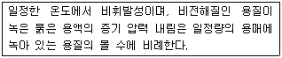
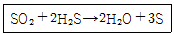
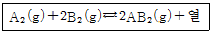
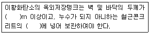
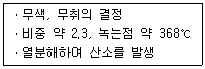

위험물산업기사 (2009-05-10 기출문제)
1과목: 일반화학
1. 중성원자가 무엇을 잃으면 양이온으로 되는가?
- 중성자
- 핵전하
- 양성자
- 전자
(정답률: 91%)

2. 다음 중 염기성 -NH2 기를 가지고 있는 것은?
- 벤조산
- 아닐린
- 페놀
- 크레졸
(정답률: 76%)
3. 다음 금속을 질산은 용액에 담갔을 때 은(Ag)이 석출되지 않는 것은?
- 백금
- 납
- 구리
- 아연
(정답률: 80%)
4. 다음에서 설명하는 법칙은 무엇인가?

- 헨리의 법칙
- 라울의 법칙
- 아보가드로의 법칙
- 보일-샤를의 법칙
(정답률: 56%)
5. 유기화합물을 질량 분석한 결과 C 84%, H 16% 의 결과를 얻었다. 다음 중 이 물질에 해당하는 실험식은?
- C5H
- C2H2
- C7H8
- C7H16
(정답률: 81%)
6. 각 원소의 1차 이온화에너지가 큰 것부터 차례로 배열된 것은?
- Cl ＞ P ＞ Li ＞ K
- Cl ＞ P ＞ K ＞ Li
- K ＞ Li ＞ Cl ＞ P
- Li ＞ K ＞ Cl ＞ P
(정답률: 43%)
7. 솔베이법으로 만들어지는 물질이 아닌 것은?
- Na2CO3
- NH4Cl
- CaCl2
- H2SO4
(정답률: 65%)
8. 다음 중 완충용액에 해당하는 것은?
- CH3COONa 와 CH3COOH
- NH4Cl 와 HCl
- CH3COONa 와 NaOH
- HCOONa 와 Na2SO4
(정답률: 83%)
9. 다음 중 요오드 값이 가장 큰 것은?
- 아마씨기름
- 올리브기름
- 야자기름
- 땅콩기름
(정답률: 78%)
10. 0.1N HCl 100mL 용액에 수산화나트륨 0.16g을 넣고 물을 첨가하여 1L로 만든 용액의 pH 값은 약 얼마인가? (단, Na의 원자량은 23이다.)
- 2.22
- 2.79
- 3.22
- 3.79
(정답률: 34%)
11. 다음 화합물 중 2mol이 완전연소될 때 6mol의 산소가 필요한 것은?
- CH3 - CH3
- CH2 = CH2
- CH ≡ CH
- C6H6
(정답률: 77%)
12. 다음 반응식에 관한 사항 중 옳은 것은?

- SO2는 산화제로 작용
- H2S는 산화제로 작용
- SO2는 촉매로 작용
- H2S는 촉매로 작용
(정답률: 77%)
13. 분자량이 120인 물질 12g을 물 500g에 녹였다. 이 용액의 몰랄농도는 몇 m인가?
- 0.1
- 0.2
- 0.3
- 0.4
(정답률: 61%)
14. 다음과 같은 반응에서 평형을 왼쪽으로 이동시킬 수 있는 조건은?

- 압력감소, 온도감소
- 압력증가, 온도증가
- 압력감소, 온도증가
- 압력증가, 온도감소
(정답률: 69%)
15. 1기압의 수소 2L와 3기압의 산소 2L를 동일 온도에서 5L의 용기에 넣으면 전체 압력은 몇 기압이 되는가?
- 4/5
- 8/5
- 12/5
- 16/5
(정답률: 76%)
16. 다음 중 디에틸에테르와 구조이성질체의 관계에 있는 것은?
- CH3COOH
- C2H5OH
- CH3CHO
- CH3OH
(정답률: 54%)
17. 다음 중 준금속(megalloid) 원소로만 이루어진 것은?
- B 과 Si
- Sn 과 Ag
- Mn 과 Sb
- Pb 과 Cu
(정답률: 52%)
18. 20℃, 28wt% 황산용액의 농도는 몇 M인가? (단, S의 원자량은 32이고, 20℃에서 28wt% 황산용액 1mL 무게는 1.202g 이다.)
- 3.43
- 3.97
- 4.11
- 5.16
(정답률: 34%)
19. SiO2 의 특성에 대한 설명 중 틀린 것은?
- 수정, 석영, 모래의 주성분이다.
- 공유결합은 없고 이온결합을 하고 있다.
- 3차원 그물구조로 육각기둥 모양을 하고 있다.
- 수산화나트륨과 작용시키면 물유리의 원료인 규산나트륨을 만든다.
(정답률: 67%)
20. 할로겐 원소에 대한 설명 중 옳지 않은 것은?
- 요오드의 최외각 전자는 7개이다.
- 할로겐 원소 중 원자 반지름이 가장 작은 원소는 F이다.
- 염화이온은 염화은의 흰색침전 생성에 관여한다.
- 브롬은 상온에서 적갈색 기체로 존재한다.
(정답률: 61%)
2과목: 화재예방과 소화방법
21. 공기 중의 상대습도를 높여 정전기를 유효하게 제거할 수 있는 설비를 설치하고자 한다. 공기 중의 상대 습도는 몇 % 이상 되게 하여야 하는가?
- 40%
- 50%
- 60%
- 70%
(정답률: 86%)
22. 단층의 위험물제조소에 옥내소화전을 3개 설치하였을 때 수원의 수량은 몇 m3 이상이어야 하는가?
- 7.8
- 9.9
- 10.4
- 23.4
(정답률: 85%)
23. Halon 1301 소화약제의 특성에 관한 설명으로 옳지 않은 것은?
- 상온, 상압에서 기체로 존재한다.
- 비전도성이다.
- 공기보다 가볍다.
- 고압용기 내에 액체로 보존한다.
(정답률: 64%)
24. 제2류 위험물의 소화방법에 대한 설명으로 틀린 것은?
- 적린과 황은 물에 의한 냉각소화가 가능하다.
- 연소시 유독한 연소생성물이 발생할 수 있으므로 주의하여야 한다.
- 철분은 직접 주수가 위험하며 물분무소화설비가 적응성이 있다.
- 마그네슘은 건조사에 의한 질식소화가 가능하다.
(정답률: 69%)
25. 다음 소화설비 중 능력 단위가 0.5인 것은?
- 삽 1개를 포함한 마른모래 50L
- 삽 1개를 포함한 마른모래 150L
- 삽 1개를 포함한 팽창질석 100L
- 삽 1개를 포함한 팽창질석 160L
(정답률: 81%)
26. 이동식분말소화설비에서 노즐 1개에서 매분당 방사하는 제1종 분말소화약제의 양은 몇 kg 이상으로 하여야 하는가?
- 18
- 27
- 32
- 45
(정답률: 63%)
27. 일반적으로 제4류 위험물 중 비수용성 액체의 화재시 물로 소화하는 것은 적당하지 않다. 그 이유를 가장 옳게 설명한 것은?
- 가연성 가스를 발생한다.
- 인화점이 낮아진다.
- 화재면의 확대 위험성이 있다.
- 물을 분해하여 수소가스를 발생한다.
(정답률: 80%)
28. 폐쇄형스프링클러헤드에 관한 기준에 따르면 급배기용덕트 등의 긴변의 길이가 몇 m를 초과하는 것이 있는 경우에는 당해 덕트 등의 아래면에도 스프링클러 헤드를 설치해야 하는가?
- 0.8
- 1.0
- 1.2
- 1.5
(정답률: 53%)
29. 표준상태에서 2kg의 이산화탄소가 모두 기체 상태의 소화약제로 방사될 경우 부피는 약 몇 L인가?
- 10.18
- 22.4
- 224
- 1018
(정답률: 58%)
30. 자연발화의 방지방법이 아닌 것은?
- 저장실의 온도를 낮출 것
- 습도가 높은 곳에 저장할 것
- 통풍을 잘 시킬 것
- 열이 축적되지 않게 할 것
(정답률: 86%)
31. 위험물 안전관리자를 반드시 선임하여야 하는 시설이 아닌 것은?
- 옥외저장소
- 옥외탱크저장소
- 주유취급소
- 이동탱크저장소
(정답률: 56%)
32. 탄산칼륨을 첨가한 것으로 물의 빙점을 낮추어 한냉지 또는 겨울철에 사용이 가능한 소화기는?
- 산ㆍ알칼리 소화기
- 할로겐화물 소화기
- 분말 소화기
- 강화액 소화기
(정답률: 78%)
33. 위험물과 적응성이 있는 소화약제의 연결이 틀린 것은?
- K - 탄산수소염류분말
- C2H5OC2H5 - CO2
- Na - 건조사
- CaC2 - H2O
(정답률: 80%)
34. 아산화탄소소화설비의 기준에서 저압식저장용기에 반드시 설치하도록 규정한 부품이 아닌 것은?
- 액면계
- 압력계
- 용기밸브
- 파괴판
(정답률: 48%)
35. 다음 중 과산화나트륨의 화재에 적응성이 있는 소화기는?
- 포소화기
- 할로겐화합물소화기
- 탄산수소염류분말소화기
- 이산화탄소소화기
(정답률: 66%)
36. 특정옥외탱크저장소라 함은 저장 또는 취급하는 액체 위험물의 최대수량이 몇 L 이상의 것을 말하는가?
- 50만
- 100만
- 150만
- 200만
(정답률: 72%)
37. 분말소화약제 중 탄산수소나트륨의 표시색상은?
- 백색
- 보라색
- 담홍색
- 회백색
(정답률: 70%)
38. 분말소화약제의 종별 주성분을 옳게 연결한 것은?
- 1종 분말약제 - NaHCO3
- 2종 분말약제 - NaHCO3
- 3종 분말약제 - KHCO3
- 4종 분말약제 - NaHCO3 + NH4H2PO4
(정답률: 73%)
39. 다음 중 C급 화재의 표시색상은?
- 청색
- 백색
- 황색
- 무색
(정답률: 80%)
40. 소화난이도등급 Ⅰ에 해당하는 옥외탱크저장소 중 유황만을 저장 취급하는 것에 설치하여야 하는 소화설비는? (단, 지중탱크와 해상탱크는 제외한다.)
- 스프링클러소화설비
- 이산화탄소소화설비
- 분말소화설비
- 물분무소화설비
(정답률: 52%)
3과목: 위험물의 성질과 취급
41. 제4류 위험물의 일반적인 취급상 주의사항으로 옳은 것은?
- 정전기가 축적되어 있으면 화재의 우려가 있으므로 정전기가 축적되지 않게 할 것
- 위험물이 유출하였을 때 액면이 확대되지 않게 흙 등으로 잘 조치한 후 자연증발시킬 것
- 물에 녹지 않는 위험물은 폐기할 경우 물을 섞어 하수구에 버릴 것
- 증기의 배출은 지표로 향해서 할 것
(정답률: 66%)
42. 물과 반응하면 폭발적으로 반응하여 에탄을 생성하는 물질은?
- (C2H5)2O
- CS2
- CH3CHO
- (C2H5)3Al
(정답률: 75%)
43. 과산화벤조일에 대한 설명으로 틀린 것은?
- 발화점이 약 425℃로 상온에서 비교적 안전하다.
- 상온에서 고체이다.
- 산소를 포함하는 산화성 물질이다.
- 물을 혼합하면 폭발성이 줄어든다.
(정답률: 53%)
44. 이황화탄소를 물 속에 저장하는 주된 이유는?
- 공기와 접촉하면 발화하기 때문에
- 화재 발생시 대응을 빠르게 하기 위하여
- 가연성 증기의 발생을 방지하기 위하여
- 불순물을 물에 용해하여 유출시키기 위하여
(정답률: 84%)
45. 다음 각 물질의 저장 방법에 대한 설명 중 틀린 것은?
- 황린은 산화제와 혼합되지 않게 저장한 저장한다.다.
- 황은 정전기가 축적되지 않도록 저장한다.
- 적린은 인화성 물질로부터 격리 저장한다.
- 마그네슘분은 물에 적시어 저장한다.
(정답률: 88%)
46. 초산메틸의 성질에 대한 설명으로 옳은 것은?
- 마취성이 있는 액체로 향기가 난다.
- 끓는점이 100℃ 이상이고 안전한 물질이다.
- 불연성 액체이다.
- 초록색의 액체로 물보다 무겁다.
(정답률: 56%)
47. 다음 ( )안에 알맞은 수치와 용어를 옳게 나열한 것은?

- 0.2, 수조
- 1.2, 수조
- 1.2, 진공탱크
- 0.2, 진공탱크
(정답률: 75%)
48. 금속칼륨의 보호액으로 가장 적당한 것은?
- 알코올
- 경유
- 아세트산
- 물
(정답률: 82%)
49. C2H5ONO2 와 C6H2(NO2)3OH 의 공통성질에 해당하는 것은?
- 품명이 니트로화합물이다.
- 인화성과 폭발성이 있는 고체이다.
- 무색 또는 담황색 액체로서 방향성이 있다.
- 알코올에 녹는다.
(정답률: 35%)
50. 과산화수소에 대한 설명 중 틀린 것은?
- 이산화망간이 있으면 분해가 촉진된다.
- 농도가 높아질수록 위험성이 커진다.
- 분해되면 산소를 방출한다.
- 산소를 포함하고 있는 가연물이다.
(정답률: 46%)
51. 다음과 같은 성질을 가진 물질은?

- KClO3
- NaClO3
- Zn(ClO3)2
- K2O2
(정답률: 45%)
52. 질산칼륨의 성질에 대한 설명 중 틀린 것은?
- 물에 녹는다.
- 분자량은 약 101이다.
- 열분해하면 산소를 방출한다.
- 비중은 1보다 작다.
(정답률: 59%)
53. 화재 발생시 물을 사용하면 위험성이 더 커지는 것은?
- 염소산칼륨
- 질산나트륨
- 과산화나트륨
- 브롬산칼륨
(정답률: 74%)
54. 지정수량 10배의 위험물을 취급할 때 혼재가 가능한 것은?
- 제1류 위험물과 제2류 위험물
- 제2류 위험물과 제3류 위험물
- 제3류 위험물과 제4류 위험물
- 제5류 위험물과 제6류 위험물
(정답률: 85%)
55. 적재시 일광의 직사를 피하기 위하여 차광성이 있는 피복으로 가려야 하는 것은?
- 메탄올
- 과산화수소
- 철분
- 가솔린
(정답률: 71%)
56. 다음 중 인화점이 20℃ 이상인 것은?
- CH3COOCH3
- CH3COCH3
- CH3COOH
- CH3CHO
(정답률: 51%)
57. 위험물 운반용기 외부에 표시하는 주의사항을 잘못 나타낸 것은?
- 적린 : 화기주의
- 탄화칼슘 : 물기엄금
- 아세톤 : 화기엄금
- 과산화수소 : 화기주의
(정답률: 59%)
58. 다음 제4류 위험물 중 연소범위가 가장 넓은 것은?
- 아세트알데히드
- 산화프로필렌
- 휘발유
- 아세톤
(정답률: 56%)
59. 산화프로필렌 300L, 메탄올 400L, 벤젠 200L를 저장하고 있는 경우 각각 지정수량배수의 총 합은 얼마인가?
- 4
- 6
- 8
- 10
(정답률: 72%)
60. 이동탱크저장소의 용량이 19000L 일 때 탱크의 칸막이는 최소 몇 개를 설치해야 하는가?
- 2
- 3
- 4
- 5
(정답률: 77%)